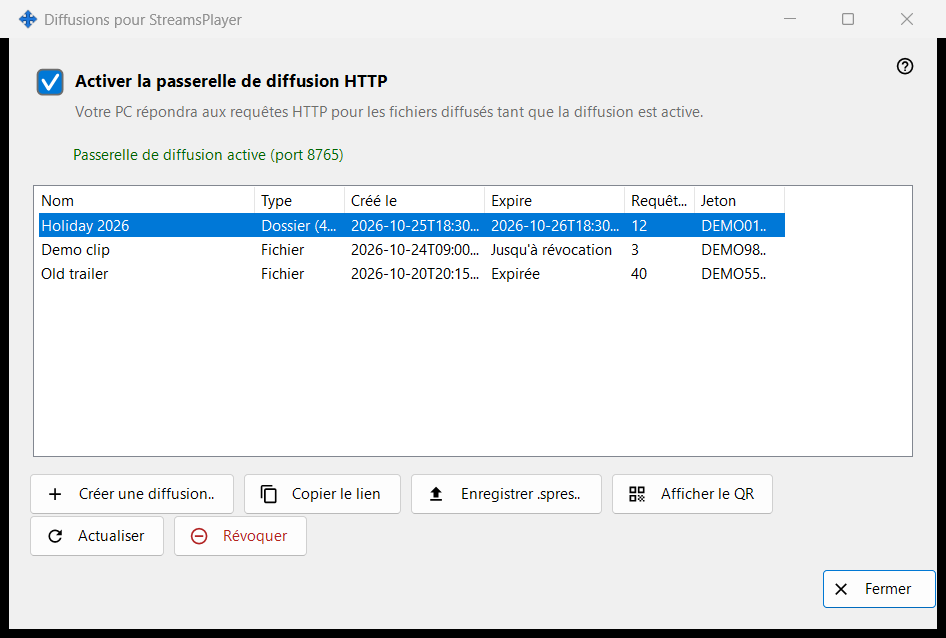
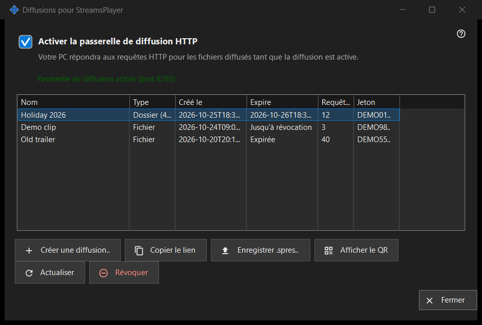

Diffusions pour StreamsPlayer
Objectif
Gère les diffusions HTTP de fichiers multimédias et de dossiers que ce PC propose à l'application StreamsPlayer. Elle s'ouvre depuis le bouton «Diffusions..» ou l'élément du menu d'ajout de la fenêtre principale de Share Manager, qui n'apparaissent que lorsque le service de partage signale la prise en charge des diffusions. Un lancement accompagné d'un chemin ouvre la fenêtre et passe directement à la boîte «Créer une diffusion» pour ce chemin.


Dans cet ordre
- Cochez «Activer la passerelle de diffusion HTTP», ou créez simplement une diffusion, ce qui active la passerelle.
- Cliquez sur «Créer une diffusion..», choisissez le fichier multimédia, réglez le titre, la durée de validité et l'option internet, puis cliquez sur «Diffuser».
- Le lien est copié dans le presse-papiers.
- Sélectionnez une ligne et utilisez «Copier le lien», «Enregistrer .spres..» ou «Afficher le QR» pour remettre la diffusion à un appareil.
- «Révoquer» une diffusion quand elle n'est plus utile.
Les éléments
Interrupteur de la passerelle
La case active ou désactive la passerelle HTTP. La ligne sous elle indique «La passerelle de diffusion est désactivée» ou «Passerelle de diffusion active (port N)». Tant que la passerelle fonctionne, ce PC répond aux requêtes HTTP pour les fichiers des diffusions. Si la passerelle ne peut pas démarrer (port, pare-feu), la case revient à son état réel et la raison s'affiche sur une ligne rouge dessous ; un refus n'ouvre jamais de boîte de dialogue.
Liste des diffusions
Colonnes : Nom, Type (Fichier, ou Dossier avec son nombre d'éléments), Créé le, Expire (une date, «Jusqu'à révocation» ou «Expirée»), Requêtes et Jeton, qui n'affiche que les six premiers caractères. La liste se relit d'elle-même toutes les 5 secondes. Un double-clic sur une ligne copie son lien.
Créer une diffusion..
Demande un fichier multimédia et ouvre la boîte «Créer une diffusion». Après votre validation, la passerelle est activée si nécessaire, la diffusion est créée et son lien est copié dans le presse-papiers avec des marqueurs de confidentialité ; un message confirme la copie.
Actualiser et Révoquer
«Actualiser» n'est disponible que pour une diffusion de dossier et demande au service de l'actualiser ; un message le confirme. «Révoquer» fonctionne sur n'importe quelle ligne et demande d'abord : «Révoquer la diffusion X ? Le lien cessera de fonctionner immédiatement.» Une diffusion révoquée ne peut pas être rétablie ; créez-en une nouvelle.
Quand la page est désactivée
Si le service de partage ne répond pas ou ne prend pas en charge les diffusions, la page se désactive d'elle-même sur place et la ligne rouge en donne la raison, par exemple que cette version du service de diffusion est obsolète ou que l'action n'a pas pu être menée à bien, avec les détails dans le journal.
Paramètres du gestionnaire · Paramètres de partage SFTP · Paramètres du serveur d’échange